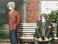

Ghostly Affection
社团
tarupito的同人社团活动介绍
目前正在 Ghosts Fuck ! , capriccio suite 活动中。
关于 Ghosts Fuck ! / 关于 capriccio suite
关于 Ghosts Fuck !
tarupito个人社团。2002年开始活动。
以月姬 ( TYPE-MOON ) 二次创作漫画为起点，之后进行原创小说及后述 capriccio suite 的委托销售・宣传等。
参加活动 : Comic Market 63 , 65 , 68 , 71 ...etc.
下部作品・下次参加活动未定。
作品介绍准备中。
关于 capriccio suite
2003年开始活动。以熾仁( taruhito )名义参加。
游戏制作 ( 一般向原创视觉小说 / 使用吉里吉里 )・原创小说等。
参加活动 :
Comic Market 68 , 69 , 70 , 71 , 73 , 75 , 76 /
Sunshine Creation 23 , 28 , 31 /
Comic Revolution 36 , 37 ...etc.
下部作品・下次参加活动未定。
以下为作品介绍
pult -concerto-
2003.12.30~ / CD-ROM / ￥500 ( 无委托销售 ) / 参与演出、音乐等
描绘少年与少女随着季节变迁相遇、离别、重逢的故事。 详情请点击

NooN. ~比平时稍长一些的那个夏日一天~
2004.10.03~ / CD-ROM / ￥500 ( 委托销售已结束 ) / 参与剧本(全)、演出、Logo制作等
某个夏日的放学后，少年与不可思议的少女相遇，面对她悲伤的恋情。 详情请点击
![[Re:]](circle/sp_r3_1.jpg)
[Re:]
2006.04.23~ / CD-ROM / ￥1000 ( 委托销售已结束 ) / 参与剧本(1路线)、演出、脚本等
因火灾失去恋人的主角，在失意中遇见了能够倒转时间的少女。
与担心的青梅竹马、妹妹、朋友们的交流，以及与酷似她的女性的相遇中，主角在现在与过去之间做出选择。 详情请点击
[Re:] precede disc
2005.06.19~ / CD-ROM & 垫板 / ￥200 ( 委托销售已结束 ) / 参与演出、脚本等
收录了[Re:]先行版的一条路线。
[Re:] summer landscape
2006.08.13~ / CD-ROM / ￥300 ( 无委托销售 ) / 参与演出、脚本等
收录了[Re:]的后日谈。 向星星许愿 / 语言的意义 / 古典生活
pult -concerto-
概要
在管弦乐团中，弦乐演奏者通常两人一组共看一份乐谱。
那个配对被称为谱台，从靠近指挥者的一方开始数，称为第一谱台、第二谱台。
故事以第一谱台、第二谱台的形式，交替描绘真二和玲菜两个视角展开。
故事
两人的心开始悸动。
仿佛在演奏一首协奏曲 -concerto-
高中三年级的夏天
各自开始思考未来道路的时候。
鸣濑真二、佐伯玲菜
因某个契机两人相遇
故事开始运转。
两人迎来的结局会是幸福结局，还是…。
制作成员
企划・原案 : kou.ta 剧本 : kou.ta 演出 : 熾仁 脚本 : 抹茶公園 / 禿侍 音乐 : 熾仁 / kou.ta / 餅 背景・CG上色 : kou.ta 影片 : kou.ta / enta
来自 capriccio suite 官方网站
NooN. ~比平时稍长一些的那个夏日一天~
故事
─── 被清晨香气包围的教室
我参加了暑假补习
像往常一样打着瞌睡
回过神来，教室里空无一人
无奈只好回家，踏上熟悉的乡间小路
感受着夏风，停下脚步
在那里我遇见了少女
本打算为她指路，不知不觉间却被她吸引
触及了她的"恋情" ───
一连串的奇妙事件
仿佛梦的延续
连那存在感都…
她到底是什么人
她为何出现在我面前
她为什么 ───
盛夏的正午
当梦与约定…思念重叠之时
他们的夏天缓缓停止 ───
下载
演示影片 :
Kokoron Mirror ,
WindFriction
制作成员
企划・剧本 : 熾仁 原画 : 形見心太 音乐 : aL 上色・影片 : kou.ta 脚本 : 抹茶公園 调试 : 禿侍


来自 capriccio suite 官方网站
[Re:]
故事
发誓要永远在一起的存在，
却从手中滑落消失。
究竟，如今还剩下什么。
主角冬弥高中毕业后，和周围的朋友一起成为了大学生。
然而，在逐渐适应大学生活的冬天，遭遇了火灾事故。
失去了夏美，自己也背负了精神创伤。
现在只想忘记这份悲伤。
想要忘记一切。
这样的世界，消失掉就好了。
怀着失意，即使新年到来也无法恢复正常生活。
漫无目的地继续走在街上。
回过神来，来到了曾经的公园。
和夏美经常一起度过的公园。
然而，那里却有些不同。
那里是公园，又不是公园。
担心冬弥、努力照顾他的春稀
因事故而产生隔阂、不太说话的妹妹雪华
在图书馆相遇、心怀某事的穂波
季节从冬向春转变之时
故事开始运转
冬弥能否再次
找回活下去的意愿呢
作品列表
Web体验版 / 演示影片 :
Kokoron Mirror ,
WindFriction ,
Xgame Electronic Station
特别内容
前日谈「雪华」 ( 其他故事请访问官方网站 )
制作成员
企划 : kou.ta 剧本 : kou.ta / 熾仁 原画 : 形見心太 音乐 : aL 上色 : kou.ta 脚本 : 熾仁 / 抹茶公園 调试 : 禿侍
主题曲 演唱 : 坂崎真央 / 鈴木ななこ 作曲・编曲 : aL 作词 : kou.ta


来自 capriccio suite 官方网站